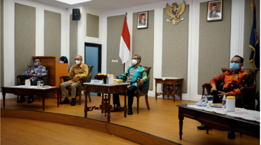
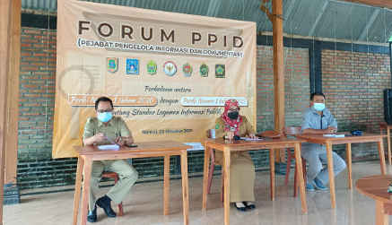
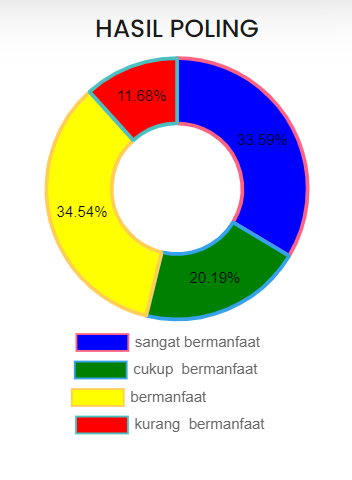

|

Pemerintah Daerah DIY Pertahankan Kualifikasi Informatif pada Anugrah Keterbukaan Informasi Publik Tahun 2021 dari Komisi Informasi Pusat RI |

Dinas Komunikasi dan Informatika DIY menghadiri Forum PPID yang diadakan PPID Utama Kabupaten Bantul |
 |